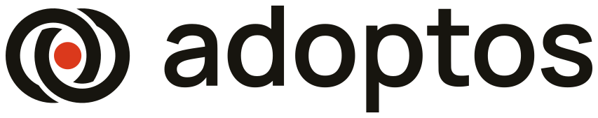
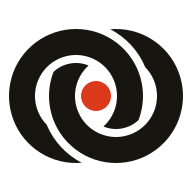
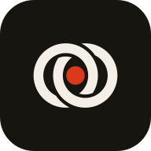
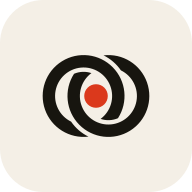

Adoptos · Conceito 3 — Dois lados que se encaixam · fase 1
Lógica01
- Anéis — anunciante e dono do espaço: dois lados do mesmo sistema.
- Encaixe — cada anel passa por cima em um cruzamento e por baixo no outro: um depende do outro.
- Ponto — o público, na zona que só existe quando os dois se encontram.
- Anéis r14 · espessura 5u · centros a ±5u · folga do encaixe 1,75u · ponto r4,8.
Logo principal02

Construção · grade de 4u03
Símbolo · variações de cor04

full-color-reversed128px
64px
32px
24px

32px · favicon16px · favicon


Animação · ideias de movimento para o símbolo
Princípios de movimento08
- O encaixe é o clímax. Toda animação constrói até o momento em que os dois lados se travam.
- O ponto chega por último. O público só aparece quando anunciante e espaço já se encontraram.
- Simetria de 180°. O símbolo é idêntico girado meia-volta: loops sem emenda, sem “pulo”.
- Signal não se mexe à toa. O vermelhão só pulsa ou cresce, nunca viaja: ele marca o lugar.
- Curvas:
cubic-bezier(.2,.8,.2,1) para entradas, (.65,0,.35,1) para giros.
- Com
prefers-reduced-motion, tudo aparece no estado final, estático.
Ideia 1 · Encaixe09
Os dois lados chegam e se travam
Os anéis entram inteiros, de lados opostos, um por cima do outro. No contato, “clicam”: passam a se entrelaçar, com um leve tranco de escala. Só então o ponto surge no centro.
abertura de vídeosplash do app3 s + pausa
Ideia 2 · Traçado10
Desenhado como uma linha contínua
Cada anel é traçado a partir do próprio corte, no mesmo sentido, com defasagem. O segundo termina passando por dentro do primeiro, e o ponto fecha a composição como um carimbo.
apresentaçõesvinheta2,8 s + pausa
Ideia 3 · Meia-volta11
Loader sem emenda
O símbolo gira 180° e para: como é simétrico, a posição final é idêntica à inicial e o ciclo recomeça sem salto. O ponto encolhe durante o giro e volta no repouso, como se “respirasse”.
carregamentopull-to-refresh2,4 s · loop
Ideia 4 · Sinal12
O lugar está ativo
Os anéis ficam parados e o ponto emite ondas que se espalham por trás deles, como o “você está aqui” de um mapa. Comunica presença ao vivo: uma tela exibindo, um público sendo alcançado.
status “ao vivo”notificação2,4 s · loop
Ideia 5 · Assinatura13
Símbolo gira e entrega o nome
Os anéis entram com um quarto de volta, o ponto se acende e o nome “adoptos” desliza de trás do símbolo. Versão para fechar vídeos e para a primeira carga do site.
fim de vídeoheader do site2,8 s + pausa
Ideia 6 · Hover14
passe o mouse
Microinteração no logo do site
Ao passar o mouse, o símbolo dá meia-volta e o ponto cresce levemente. Discreto o bastante para o header, e reaproveita a simetria da Ideia 3, então nunca termina “torto”.
headerbotões0,7 s · transição